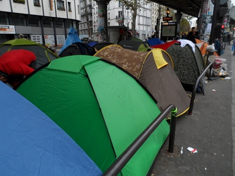

For obvious reasons the camera was discretely hidden - that explains the jerkiness and lack of focus in the video clip above.

(October 30, 2016) Over 2,000 migrants are now camping in squalid conditions at the Stalingrad/Avenue de Flandre area in the 19th district of Paris, a number of them admitting to have come from Calais. (Above picture was taken near the entrance to the Stalingrad metro station on October 29, 2016.)
Actually what you see in the picture above does not reflect the really scandalous situation some 200-300m away along Avenue de Flandre (from the Rotonde de la Villette to 50 Avenue de Flandre near the Riquet metro station). There, in the wide alley-like path right in the middle of the broad avenue, you can walk for a full 500m among crowded pop-up tents of all sizes, colours and shapes in very unsanitary conditions. Paris is likely to become the next "Calais Jungle" if such a situation is allowed to deteriorate.
Though it is not an avenue frequented by tourists, Avenue de Flandre is within walking distance of La Cité des Sciences and the Gare du Nord.
Go here for article in French.